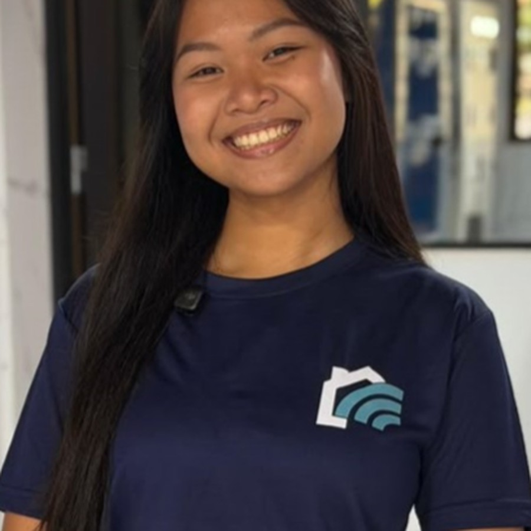

Studeren in software, werken op evenementen, sporten in vrije tijd.
Mijn naam is Lourdes Abdillah en ik ben 21 jaar. Ik sta veel in het publiek of voor de camera voor dans of promo en daarnaast studeer ik Software Engineering aan UNASAT. Outgoing, spontaan, en altijd in voor een nieuw avontuur.

Wat ik doe
Promo
Van shoots tot events; als figurant of als promodame om producten, diensten of evenementen voor verschillende ondernemers en ondernemingen te promoten.
Danseres
Actief bij KBRI Paramaribo, Sanggar Sinaring Surya en Line Dance Group Isthika: kennisoverdracht, workshops en bestuursondersteuning. Dansen doe ik al sinds mijn zesde en is een van mijn manieren om de javaanse cultuur voort te dragen.
Software Engineering student
Ik ben van cohort 2024 en ik studeer Software Engineering aan UNASAT waar ik heb leren werken met verschillende onderdelen zoals Java, HTML, CSS en verschillende tools als basis.